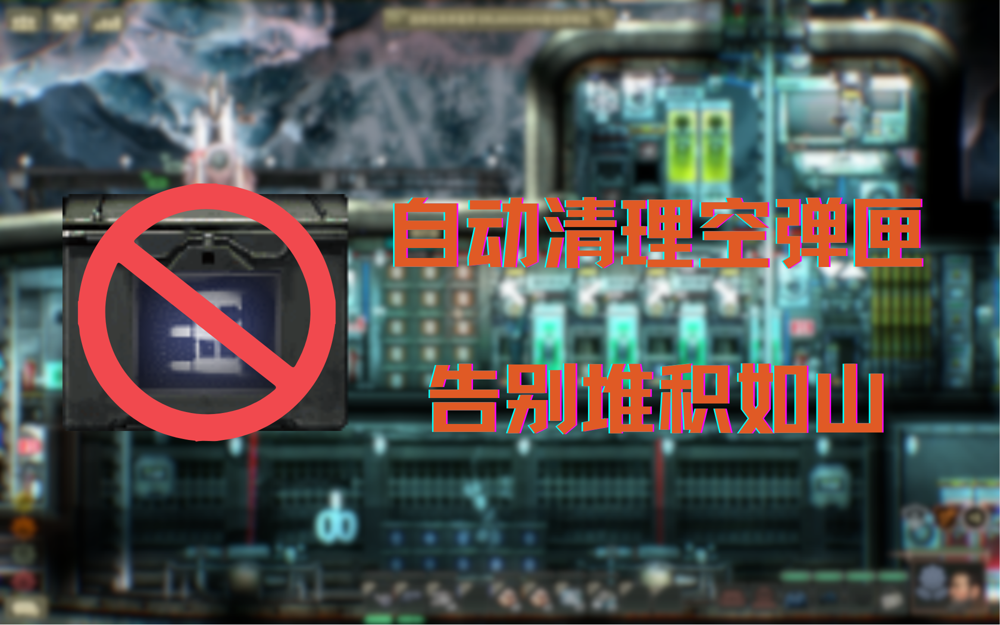

潜渊症自动清理地上的空弹匣
一个用于 Barotrauma 的轻量 Lua 模组。
会自动清理掉在地上的空弹匣、空弹药箱，以及部分已经耗尽的轨道炮弹和深水炸弹，减少潜艇内部杂物堆积。
功能
-
● 清理空弹匣
● 清理空弹药箱
● 清理部分已耗尽的轨道炮弹
● 清理部分已耗尽的深水炸弹/诱饵弹药
● 仅处理掉在地上的废弃物品
● 不清理背包、容器和正常可用弹药
设计目标
这个模组的目标不是改动平衡，也不是增加新内容。它只是解决一个很烦人的小问题：
打完后的废弃弹药会一直留在地上，占地方，也影响整洁。 因此，这个模组专注于：
-
● 自动化清理
● 尽量低侵入
● 尽量避免误删
● 保持原版体验
依赖
- Lua For Barotrauma
安装方法
将模组放入 Barotrauma/LocalMods/ 目录，并在游戏内容包列表中启用。
确保已经正确安装并启用 Lua For Barotrauma。
适用范围
-
● 单人游戏
● 本地主机
● 使用 Lua For Barotrauma 的环境
说明
本模组只会清理掉在地上的、已明显耗尽的废弃弹药物品。
不会处理背包、柜子或仍可正常使用的弹药。